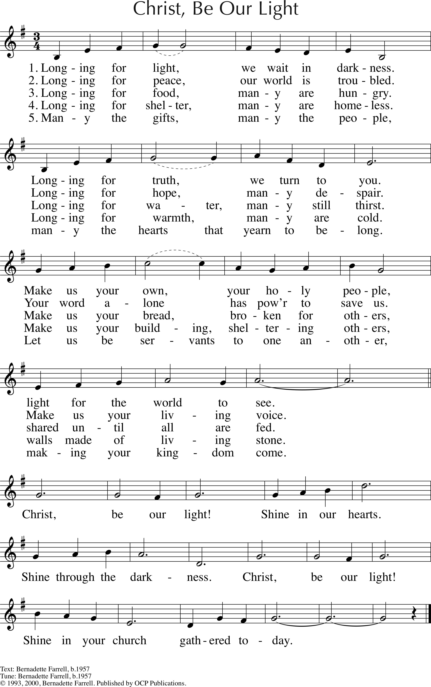

|
|
561求主作我光 |
|
1. Longing for light, we wait in darkness. |
|
|
https://www.stfrancisa2.com/music-this-sunday-0809/
 |
|
|
|
|


561求主作我光 https://youtu.be/V8RpaOMAQtw https://www.youtube.com/watch?v=tcyKbB2xf7U https://www.youtube.com/watch?v=i4eNo_KygKc -
Longing for light · World Day of Prayer · Bea Nyga · Bernadette Farrell · Bea Nyga · Bernadette https://youtu.be/ESn0f94Ln54 -
"Longing for Light" was written by the English hymn writer Bernadette
Farrell, published in 1993.
https://youtu.be/TS7AlBeApwk
-
Longing for light ·
| Text: | Longing for Light, We Wait in Darkness (Christ, Be Our Light) |
| Author: | Bernadette Farrell |
| Tune: | CHRIST, BE OUR LIGHT |
| Composer: | Bernadette Farrell |
| Media: | Audio recording |
| Short Name: | Bernadette Farrell |
| Full Name: | Farrell, Bernadette, 1957- |
| Birth Year: | 1957 |

Longing for Light,
Ideas for use
Equally successful accompanied by organ, keyboard or praise band, ‘Longing for
light’ also lends itself to being shared between a soloist(s) and congregation.
The burst of energy that the melody brings at the start of each refrain is
emphasised still further when a congregation joins in at this point, responding
to the prayer of a soloist in the preceding verse.
Alternatively, try having members of your congregation face each other in two
groups (for example, across a central aisle), the two groups singing alternate
verses (1 to 4) and joining together in the refrain. Everybody can join together
in the final verse: ‘Many the gifts, many the people...’ In this way members of
the congregation can commit themselves, through singing, to each other and to
action for justice inspired by Christ.
Alison Richard’s has developed a simple
liturgy around
the singing of this hymn, designed to accompany the annual lighting of the
Advent candles.
More information
‘Longing for light’ is one of a number of hymns by Bernadette Farrell included
in Singing the Faith that express a hope (underlying or overt) for peace and
justice in God’s world. (See, for example, StF
26 and StF
577).
Each verse of this hymn follows a similar pattern, moving from a statement of
what many long for yet don’t have
– basic human rights and the fundamentals everyday living – to our commitment to
share what we do have
and respond to the needs of others. In this way, we may be a ‘light for the
world to see, servants endeavouring to make Christ’s kingdom visible on earth.
Bernadette Farrell - social activist and hymn writer
Bernadette Farrell is a British Catholic hymn writer born in West Yorkshire in
1957. Since the 1970s, she has become well-known across all Christian
denominations for her challenging texts and memorable melodies. She says,
however, that “writing wasn't my intention or plan. It was a practical response
to the needs around me” – as this hymn demonstrates.
Bernadette’s personal commitment to social action is seen in her work as a
community organiser for South London Citizens, part of Citizens UK – an
organisation that seeks to empower groups and individuals to work together to
change their communities for the best. She organised the successful ‘Lunar House
Campaign,’ achieving improved conditions for staff and the public at the UK’s
main immigration reception centre, a ‘Friends’ volunteer service and,
eventually, a new £800,000 building in Croydon.
You can hear short audio
clips of
this and many other of Bernadette’s hymns and songs on the website of her
American publisher.
Christ be our Light - Reflections

Christ be our Light is a beautiful modern hymn written by Bernadette Farrell in 1994. This Lent we are reflecting on each line in the verses and chorus and will make three short stops in the bible to help us journey through this hymn during Lententide.

Longing for light, we wait in darkness.
Longing for truth, we turn to you.
Make us your own, your holy people, light for the world to see.
Longing for light, we wait in darkness
Whenever I see the word light, especially when it is coupled with darkness I am taken back to the very beginning of creation. Indeed, to day one!
‘Then God said, “Let there be light”; and there was light. 4 And God saw that the light was good; and God separated the light from the darkness. 5 God called the light Day, and the darkness he called Night. And there was evening and there was morning, the first day.’ (Gen 1.3-5)
I think we can assume from this that light is very important. I write this as the days are gradually getting lighter. How we long for the light to return. Personally, I feel safer in the light.
Darkness is a term we use the to mean that we don’t know something or we’ve not been told it. Until we put electricity into some homes and schools in Rwanda it had never occurred to us that it is almost impossible for them to study after 6pm every day. Longing for light is a very natural, normal human experience.
Darkness was the ninth plague visited upon the Egyptians before the exodus:
’Then the LORD said to Moses, “Stretch out your hand toward heaven so that there may be darkness over the land of Egypt, a darkness that can be felt.” So Moses stretched out his hand toward heaven, and there was dense darkness in all the land of Egypt for three days. People could not see one another, and for three days they could not move from where they were; but all the Israelites had light where they lived.’ (Exodus 10.21-23.)
This seems to give us the idea that darkness binds, darkness restricts. The complete opposite is true for light. It releases, it gives freedom. Imagine you have to get your way out of a dark room with which you are not familiar. Hands out in front of you, feet gingerly placed in very small steps. Many prayers that you don’t hit something really solid because you know it will hurt. Contrast that moving in a brightly lit place. You do so with confidence and energy.
And finally, we look at one of the most famous passages in scripture
‘In the beginning was the Word, and the Word was with God, and the Word was God. He was in the beginning with God. All things came into being through him, and without him not one thing came into being. What has come into being in him was life, and the life was the light of all people.’ (John 1:1-4)
Jesus Christ, the Light of the World. We long for Him and as we long for the Light we realise that we sit in darkness. But we only have to open ourselves to Him to experience the light casting out the darkness and to give us the confidence to step, with energy, into His world.
Longing for truth, we turn to you
As much as ‘longing for light’ is a natural inbuilt human desire I believe that deep down we all recognise the truth when we hear it and we desire it at a visceral level. As humans we acknowledge what Jesus told His disciples:
‘Then Jesus said to the Jews who had believed in him, “If you continue in my word, you are truly my disciples; and you will know the truth, and the truth will make you free.”’ (John 8.31)
Perhaps we could reflect on the agreement between these two lines; light sets you free, truth sets you free!
From Luke 15 we read verse 17, ‘But when he came to himself….’ Do you recognise it? These words are taken from the parable Jesus told of the Prodigal Son. This is the moment when he ‘turns’. He turns away from his previous life which was going nowhere and re-turns to his Father. He recognises the ‘truth’ that only his Father can give.
What do we need to turn away from? Ashing this Lent was different, but we were, in some way or other, still asked to ‘Turn away from sin and be faithful to the Gospel.’ This was after we had been reminded that, ‘From dust you came and to dust you will return.’
The letters of John, 1,2 and 3 all bring these themes of light and truth together. They are well worth reading through and reflecting upon. John is very keen that his readers should not give credence to any of the Gnostic ideas that swirled around the true story of the Messiah. He makes clear, bold, true statements about God and Jesus. In his first chapter he writes:
‘This is the message we have heard from him and proclaim to you, that God is light and in him there is no darkness at all. If we say that we have fellowship with him while we are walking in darkness, we lie and do not do what is true; but if we walk in the light as he himself is in the light, we have fellowship with one another, and the blood of Jesus his Son cleanses us from all sin. If we say that we have no sin, we deceive ourselves, and the truth is not in us. If we confess our sins, he who is faithful and just will forgive us our sins and cleanse us from all unrighteousness.’ (1 John 1.5-9)
Later he will talk of those who walk in the truth and those who walk in the light. They are the same people.
What does it mean for you to walk in truth and light?
Make us your own, your holy people
‘So, God created humankind in his image, in the image of God he created them; male and female he created them.’ (Genesis 1.27)
They say that all humans like water! Some theorise that it because we want to return to the womb, others that it is because we originally came from the sea. Who knows? However, one thing I am certain of is that God created human beings! In His image He created them and as the creation story continues;
‘They heard the sound of the LORD God walking in the garden at the time of the evening breeze. The LORD God called to the man, and said to him, “Where are you?”’ (Genesis 3.8-9) He liked to walk and talk with them. So, just as our desire is to return to water, for whatever reason, so is our desire to become one with God. Here, today, is not the place to rehearse all the things that humans do to fill the gap, the void, they feel until they acknowledge that it is God and God alone who can satisfy but the first part of this line in the first verse reminds us that we are His and we need Him to help us cement that relationship.
How do we show in our daily lives that we belong to God.
The 1st Letter of Peter 2.9-10 says:
‘But you are a chosen race, a royal priesthood, a holy nation, God’s own people, in order that you may proclaim the mighty acts of him who called you out of darkness into his marvellous light. Once you were not a people, but now you are God’s people; once you had not received mercy, but now you have received mercy.’
We know the story but let’s rehearse it. God created us and we were His, we rebelled, God promised a solution. The solution is Jesus so Peter can write that through Jesus we are now God’s chosen race, a royal priesthood, a holy nation. Jesus told us that through Him we could call God Abba, Father. We were His sons and daughters. But still we rebel and turn away. Thankfully we have an advocate in Jesus and as long as we keep turning to Him He will forgive us and we become, again, a child of God.
What does it mean to be a child of God?
In his first letter to the Paul sums up what God, through Jesus has done for us:
‘And this is what some of you used to be. But you were washed, you were sanctified, you were justified in the name of the Lord Jesus Christ and in the Spirit of our God.’ (1 Cor 6.11)
Let’s put all those things together; God made us, we turned away, He sent His Son to die on a cross for us so that we could, once again, be His. He promised He would do it all the way back at the calling of Abraham and he has delivered on His promise. In order for us to access this great grace we simply have to say yes. Once we have said, YES, we will be set aside because as Paul wrote and Peter wrote we have been sanctified by His grace and we have been set aside, a holy nation. Jesus reminded His disciples that they were ‘in the world yet not of the world.’
How do we live out being God’s child, a Holy child in today’s world?
light for the world to see
‘“No one after lighting a lamp hides it under a jar, or puts it under a bed, but puts it on a lampstand, so that those who enter may see the light.’ (Luke 8.16)
That’s what Jesus said. If we have sung the previous words in this verse and truly meant them we can do nothing but be a light for the world to see. We all know how we affect one another. We have become painfully aware in the last twelve months of how much we rely on our interaction with one another. We all know that the interactions can sometimes have a positive effect and sometimes a negative effect. St. Barnabas is known as a great encourager and reconciler. These attributes made him a light. We could follow in his footsteps.
Besides the passage we have already looked at in John’s gospel where Jesus is called the Light of the World He is also called ‘a light’ in a passage known as the Nunc Dimittis said by Simeon and recorded in Luke’s Gospel:
‘Simeon took him in his arms and praised God, saying, “Master, now you are dismissing your servant in peace, according to your word; for my eyes have seen your salvation, which you have prepared in the presence of all peoples, a light for revelation to the Gentiles and for glory to your people Israel.”’ (Luke 2.28-32)
Here ‘a light’ is that which will reveal. Jesus will be the light that shows God’s promise of salvation is for the whole world, for everybody.
Do we behave as if God’s grace is for everyone or only those who are worthy?
Paul, in his letter to the Colossians has this to say:
‘You have heard of this hope before in the word of the truth, the gospel that has come to you. Just as it is bearing fruit and growing in the whole world, so it has been bearing fruit among yourselves from the day you heard it and truly comprehended the grace of God.’ (Col.3.5-6)
And would give us every reason to sing the last line which huge passion. God has promised that when His truth is told it will become a light to those who hear it and those who respond will become lights in the world and through their witness fruit will be born which is the coming of His Kingdom on earth. Heaven breaking though to earth with all the wonderful effects that that can have.
So, as we finish this first reflection on this beautiful hymn by Bernadette Farrell let us reflect and commit ourselves again to turning to Christ, allowing ourselves to be His children, becoming lights in the world and bringing His loving truth to every situation. What a challenge!
Mark
You can find out more about Bernadette Farrell here.
See the Reflections videos on our YouTube Channel
https://parishofmerthyrtydfil.com/news/christ-be-our-light-reflections